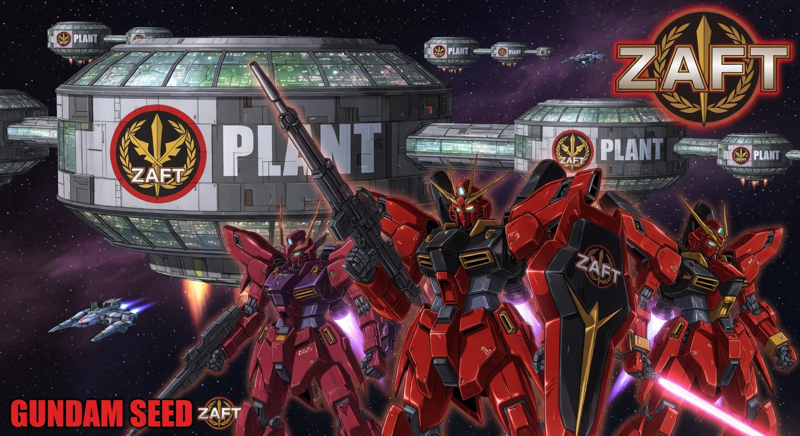
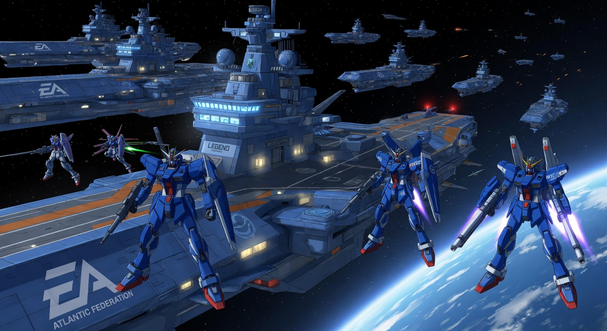
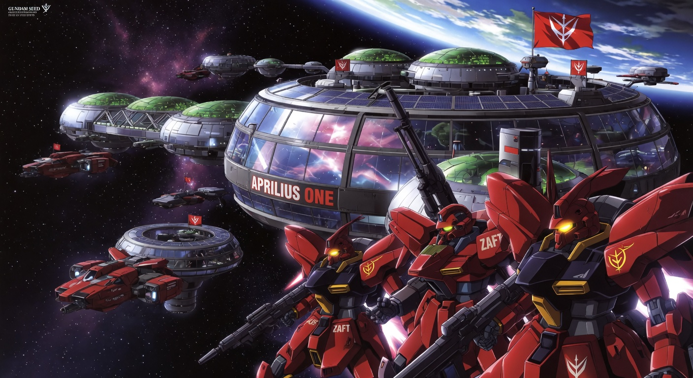
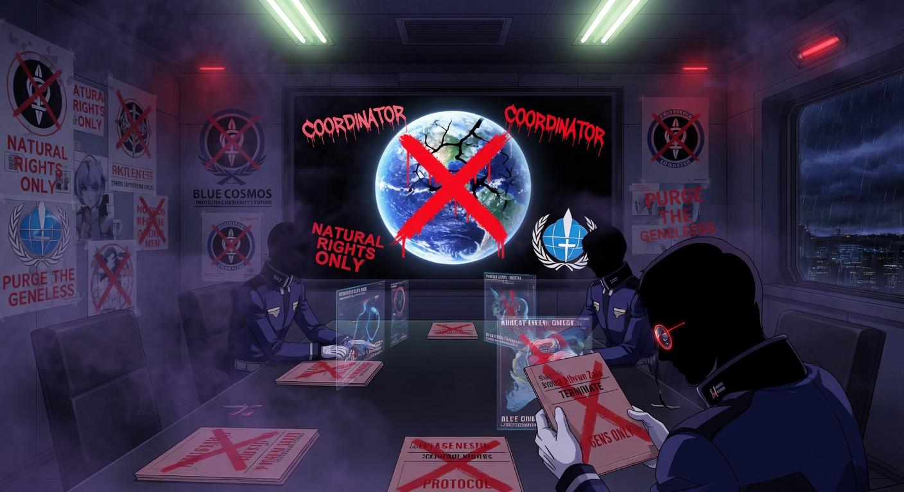
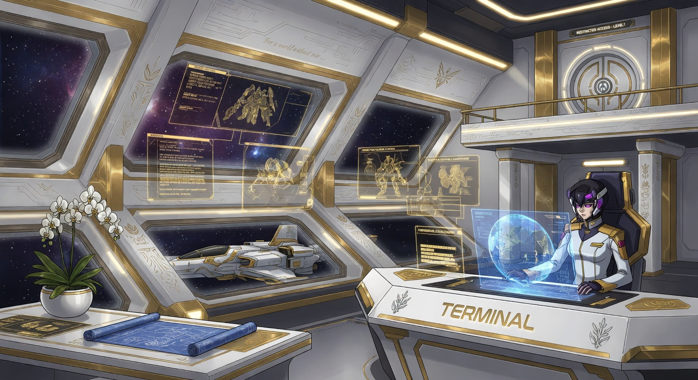
以SEED式的非线性与宿命感重现宇宙的关键时刻。每一刻都改变了无数人的轨迹。
她们以舞蹈诉说爱、战争与自由。点击观看专属舞蹈影像并聆听命运交响。
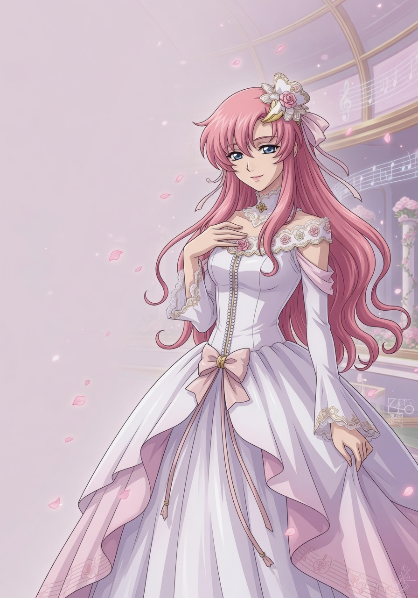
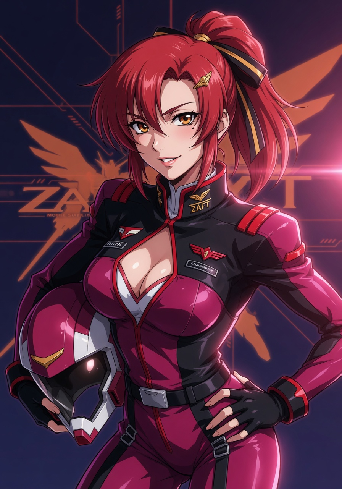
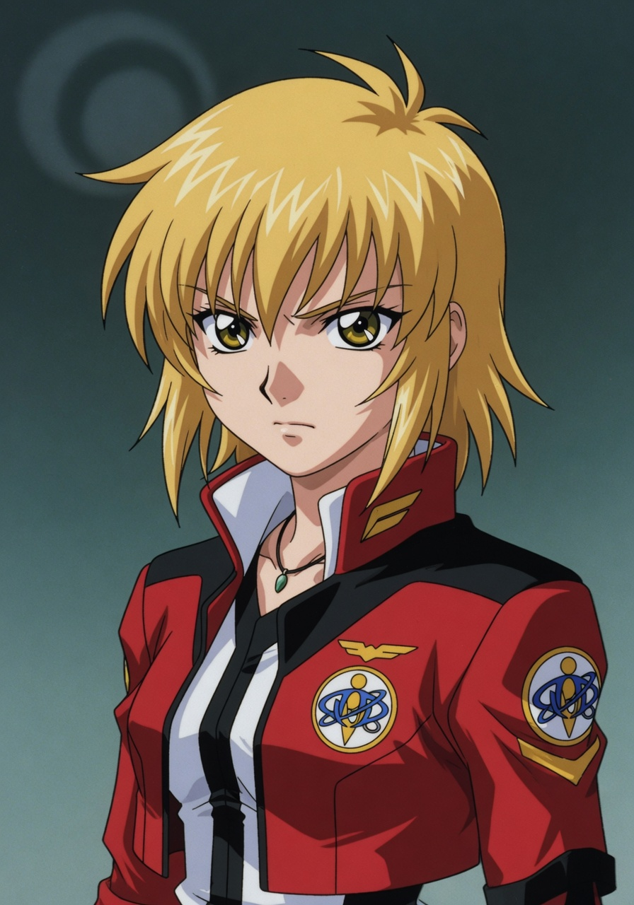
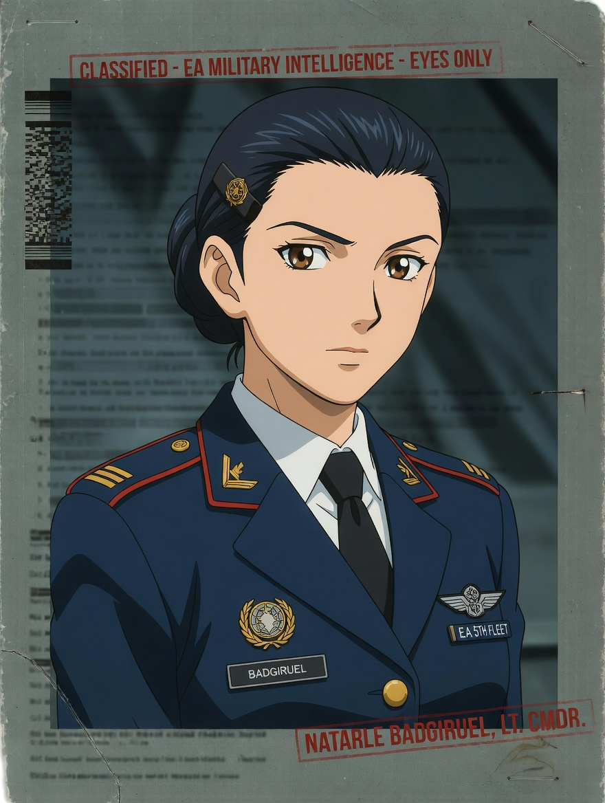
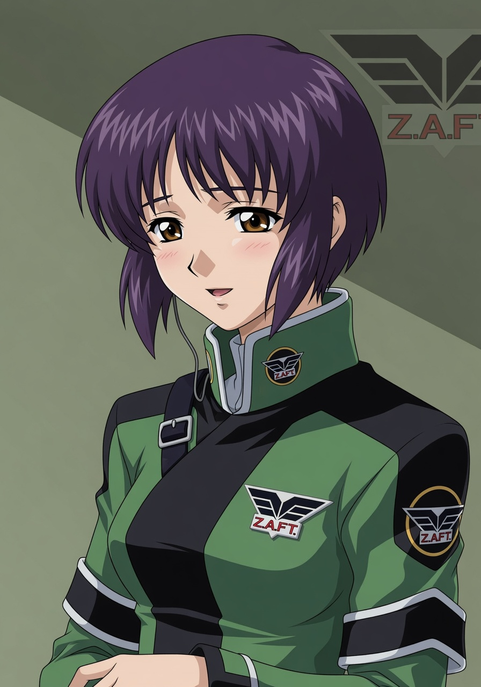
C.E.74 · 战争结束后，基拉与拉克丝、阿斯兰与卡嘉莉、真与露娜玛丽亚在不同角落找到的温柔日常。永恒号的私人影像记录，记录那些被光之翼守护的平凡幸福。
C.E.71-73 机动战士 SEED 情感生活与对战瞬间的珍贵记录。真实的爱、失去、选择与宿命，由永恒号与终端共同保存。
以动态视频动画形式呈现的驾驶员恋爱故事 · 甜甜女生中文配音 + 舒缓钢琴背景音乐
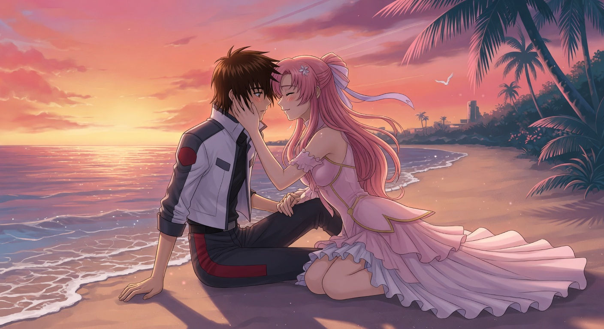
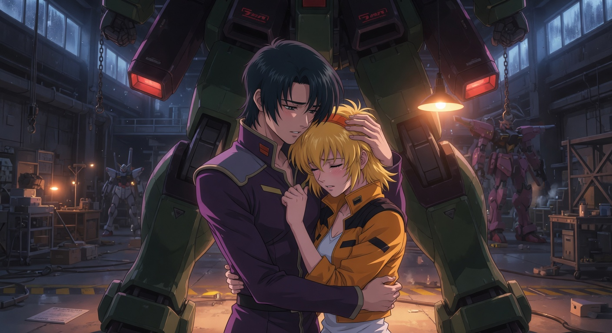
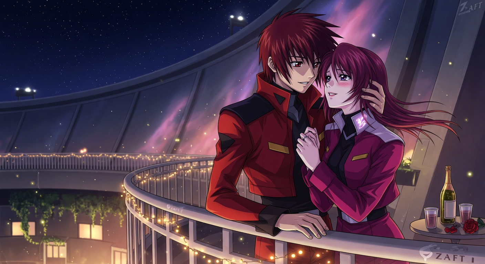